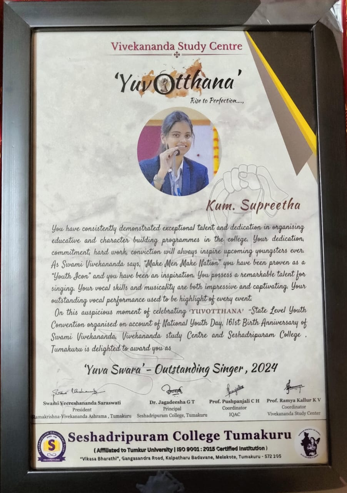

Objective
To leverage my technical expertise, problem-solving abilities, and collaborative skills to contribute to innovative software and web development projects. I aim to grow as a versatile developer by learning and adapting to new technologies while adding value to organizational goals
Back to homepagePROJECTS
.png)
1.Fuel Station | Technology Stack Used–Vs-Code,HTML , CSS 2021
The Project describes the scope and viability of the petroleum industry and mainly of the finacial,technical and its market potential. Strong track record of delivering high-quality websites and applications, optimizing user experiences, and collaborating effectively with cross-functional teams to meet project goals.” Added 10-12 new features like organising the user interface of module’s HOME PAGE ,worked with group of 4.
Project 1.png)
2.The purpose of a YouTube clone here is to increase the ease of use for both the service providers and customers.
Modules consist of 4-5 different type of users with different functionalities. It is a static Website. Project 2EDUCATION
1.Siddaganga Institute of Technology - Tumkur
Paasing:Pursuing
Board:Autonomous Institute, VTU Affiliated
2.Seshadripuram Degree College - Tumkur
Board:Tumkur University
3.Siddaganga Womens College - Tumkur
Board:Karnataka State Board
4.St. Mary's School - Tumkur
Board:CBSE Board
CERTIFICATIONS
1.GreatLearning-HTML,CSS
2.Completed The certification course "Programming in Java" By NPTEL(Swayam)
3.INFOSYS Spring Board- PYTHON
TECHNICAL SKILLS
1. PROGRAMMING LANGUAGES [BASICS]- C, Core Java, Python
2. WEB TECHNOLOGIES : [BASICS] - HTML, CSS, PHP
3. DATABASE : MYSQL
4. Cloud Computing: AWS Free Tier
ACHIEVEMENTS

1.Participated in State Level YUVA Janosthsava Singing Competitionorganised by Central government.
2. State level inter-college competition secured first place.
3.District level first place in singing organised by Central Government.
4."YUVA SWARA-OUTSTANDING SINGER" from YUVOTTHANA-State level Conventionorganized on the account
of NationalYouth day.